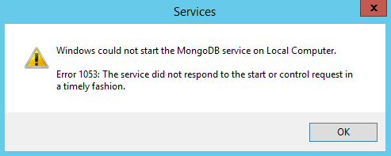

Problem
After installing Change Tracker for the first time you are able to reach the logon problem but recieve a 'Logon Failure' message when attempted to access Change Tracker. You have checked the state of the Mongo service and it is marked as stopped. When you attempt to start the service the below service error is recieved.
'Windows could not start the MongoDB service on Local Computer'

Solution
Update theVisual C++ Redistributable Packages on the system.
- Download latest Visual C++ package from - https://www.microsoft.com/en-gb/download/details.aspx?id=48145
- Once downloaded, install the C++ Package, there will be no reboot required.
- Start the MongoDB service.